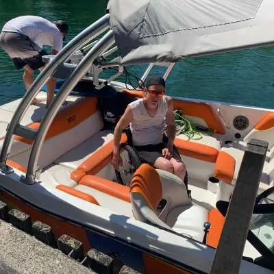

Was bedeutet Waken?
Das Wort «Waken» kommt von «Wake», der Heckwelle eines Bootes. Beim Wakeboarden fahren Sie mit einem Brett hinter dem Boot, halten sich an einem Seil fest und nutzen die Welle, um über sie hinwegzuspringen oder Tricks zu üben. Viele Sportler sagen auch «Waken und Surfen», weil beide Disziplinen auf demselben Boot funktionieren: Beim Wakeboarden werden Sie am Seil gezogen, beim Wakesurfen surfen Sie auf der Welle, ohne am Seil zu hängen.
Auf dem Zürichsee haben Sie dafür viel Platz. Am Morgen ist der See oft spiegelglatt, die Bedingungen für Wasserski und Wakeboard sind dann besonders gut. Wer ein passendes Boot mieten möchte, findet es bei unserer Bootsvermietung am Zürichsee ab Hafen Wollishofen.
Waken oder Surfen: Wo liegt der Unterschied?
- Wakeboarden: Sie stehen mit beiden Füssen auf einem Brett, halten das Seil und werden vom Boot gezogen. Die Geschwindigkeit ist höher, Sprünge und Tricks über die Welle gehören dazu.
- Wakesurfen: Sie surfen auf einem kurzen Board direkt auf der Welle hinter dem Boot. Das Seil benötigen Sie nur zum Start. Die Fahrt ist langsamer und entspannter.
- Wasserski: Die klassische Variante mit Skiern, die wir bei den MasterCraft-Booten ebenfalls ermöglichen.
Wer vor allem ins Surfen einsteigen möchte, liest weiter im Beitrag Surfen hinter der Bootswelle auf dem Zürichsee.
Das richtige Boot: MasterCraft für Wakeboard und Wakesurf
Zum Waken brauchen Sie ein Boot, das eine saubere Welle formt und viel Leistung hat. Die MasterCraft-Boote in unserer Flotte sind genau dafür gebaut:
- MasterCraft NXT20: Das Wakeboard- und Wakesurf-Boot schlechthin. Es formt eine perfekte Welle, hat einen Wakeboard-Tower und bietet Platz für bis zu 11 Personen.
- MasterCraft NXT 22: Die neue, grössere Variante mit noch mehr Platz, mehr Ballast und einer XXL-Surfwelle für lange Sessions.
- MasterCraft X-Star (Private): Das legendäre Pro-Tour-Boot für erfahrene Rider, auf private Anfrage.

Mit bis zu 11 Personen an Bord ist genug Platz für die Freunde, die abwechselnd fahren und anfeuern. Alle Modelle finden Sie auf Unsere Boote oder auf der Seite Wakeboard, Wakesurf und Wasserski.
Wakeboarden für Einsteiger: So gelingt der Start
Wakeboarden zu lernen ist leichter, als es aussieht, wenn Sie ein paar Grundlagen beachten:
- Schwimmweste anziehen: Tragen Sie immer eine passende Weste. Fragen Sie bei der Reservation nach der Ausrüstung.
- Im Wasser vorbereiten: Sie liegen mit dem Brett vor sich im Wasser, die Knie angezogen und das Seil gespannt zwischen den Händen.
- Aufstehen: Sobald das Boot beschleunigt, bleiben Sie in der Hocke, die Arme gestreckt. Das Boot zieht Sie hoch. Ziehen Sie nicht selbst am Seil.
- Stehen und balancieren: Knie leicht gebeugt, Gewicht gleichmässig auf beide Füsse, Griff tief an der Hüfte.
- Über die Welle fahren: Wenn Sie sicher stehen, lernen Sie, die Welle seitlich zu überqueren.
- Loslassen und abbremsen: Zum Beenden lassen Sie das Seil los und sinken sanft ins Wasser.
Rechnen Sie bei den ersten Versuchen mit mehreren Anläufen. Geduld und gute Kommunikation mit dem Fahrer machen den Unterschied.
Sicherheit beim Waken
Wassersport hinter dem Boot macht Spass, verlangt aber Aufmerksamkeit. Diese Regeln gelten für alle:
- Zwei Personen im Boot: Neben dem Fahrer sollte immer eine zweite Person das Geschehen im Wasser beobachten.
- Handzeichen vereinbaren: Für Schneller, Langsamer, Stopp und Rückkehr.
- Abstand zu Ufer, Booten und Badenden: Fahren Sie nur in Bereichen mit ausreichend freiem Wasser.
- Motor aus bei Ein- und Ausstieg: Wer im Wasser ist oder ins Boot klettert, wird nur mit abgestelltem Motor aufgenommen.
- Seil nach dem Sturz einholen: Das Seil darf nicht in die Nähe des Propellers geraten.
- Wetter beachten: Bei Wind, Wellengang oder Gewitter bleiben Sie an Land.
Kein Bootsführerschein? Mieten Sie das Boot mit Skipper – er fährt, achtet auf Sicherheit und gibt auf Wunsch Tipps zur Welle. Details finden Sie unter Boot mit Skipper mieten.
Beste Zeiten zum Waken auf dem Zürichsee
Die Saison beginnt etwa an Pfingsten. Am besten sind die frühen Morgenstunden: Der See ist ruhig, die Wasseroberfläche glatt, und es sind weniger andere Boote unterwegs. Auch am späten Nachmittag und Abend kann es ruhiger werden. An Wochenenden und Feiertagen gilt in der Regel die Ganztagesmiete, die Ihnen genug Zeit für mehrere Runden und eine Pause bietet. Die Abendmiete ist auf maximal drei Stunden und auf Wochentage beschränkt.
Ausrüstung: Was Sie zum Waken brauchen
- Wakeboard mit Bindung: Die Länge richtet sich nach Körpergrösse und Gewicht. Einsteiger fahren am besten mit einem verzeihenden, nicht zu aggressiven Brett.
- Seil mit Handgriff: Die Länge bestimmt die Position zur Welle. Für den Start ist ein kürzeres Seil einfacher.
- Schwimmweste: Sie ist Pflicht für alle, die im Wasser sind, besonders für Anfänger.
- Neoprenanzug: Im Frühling und Herbst ist der See noch oder wieder kühl. Mit Anzug bleiben Sie länger im Wasser.
- Sonnenschutz und Handtuch: Für die Pausen an Bord.
Klären Sie bei der Reservation, welche Ausrüstung verfügbar ist und was Sie selbst mitbringen sollten.
Tipps für Fahrer und Beobachter
Gutes Waken ist Teamarbeit. Wer das Boot fährt, hat grossen Einfluss darauf, ob der Fahrer im Wasser Spass hat oder frustriert aufgibt:
- Fahren Sie gleichmässig und in möglichst geraden Linien. Abruptes Gasgeben wirft Anfänger aus der Balance.
- Fahren Sie weite Kurven und schauen Sie regelmässig nach hinten oder lassen Sie den Beobachter melden.
- Nach einem Sturz kehren Sie langsam zum Fahrer zurück und nähern sich so, dass das Seil nie in die Nähe des Propellers gerät.
- Lassen Sie den Fahrer das Tempo mit Handzeichen bestimmen, statt zu raten.
- Planen Sie Pausen ein. Waken ist anstrengend, und Müdigkeit erhöht das Risiko von Stürzen.
Waken mieten: Ablauf und Kosten
So funktioniert die Buchung: Sie wählen ein MasterCraft-Boot, Datum und Mietdauer, schicken uns eine Nachricht per WhatsApp an +41 79 431 88 22 und erhalten eine Antwort mit Verfügbarkeit und Preis. Der Preis hängt von Boot, Dauer und Saison ab und wird auf Anfrage genannt. Treibstoff wird nach Verbrauch abgerechnet. Eine Übersicht finden Sie unter Preise, alle Regeln unter Mietkonditionen.
Als Anfänger können Sie eine Einweisung mit Instruktionsfahrt (CHF 70) buchen. Fragen Sie bei der Reservation auch nach der verfügbaren Ausrüstung, damit Sie vor Ort nicht überrascht werden.
Häufige Fragen zum Waken auf dem Zürichsee
Kann ich auf dem Zürichsee wakeboarden?
Ja. Mit den MasterCraft NXT20 und NXT 22 ab Wollishofen sind Wakeboard, Wakesurf und Wasserski möglich.
Wie viele Personen dürfen mitfahren?
Beide Boote sind für bis zu 11 Personen zugelassen.
Brauche ich einen Bootsführerschein?
Für die Fahrt ohne Skipper ja. Ohne Führerschein buchen Sie einen Skipper.
Wie lange dauert eine Session?
Das hängt von Ihrer Mietdauer ab: Halbtag (5 Stunden), Ganztag (10 Stunden) oder Abend (maximal 3 Stunden).
Jetzt Waken auf dem Zürichsee anfragen
Bereit für den ersten Ritt über die Welle? Auf unserer Startseite der Bootsvermietung Zürichsee sehen Sie alle Boote, im Ratgeber Boot mieten am Zürichsee finden Sie alle Tipps zur Miete. Schreiben Sie uns mit Datum, Dauer und Personenzahl – wir melden uns umgehend.